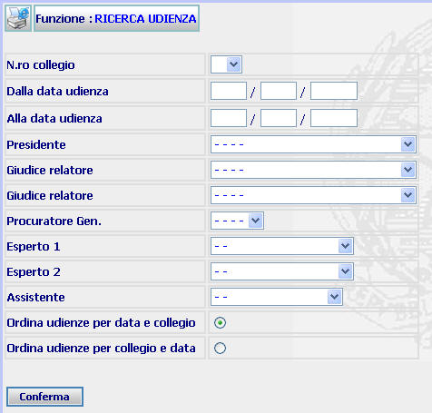

RICERCA UDIENZA: La funzione prescelta consente di ricercare l'elenco delle udienze fissate all'interno di un periodo determinato. Consente, altresì, di filtrare le udienze in base ad uno o più componenti delle stesse al fine di verificare il numero e la durata delle udienze cui essi hanno preso parte.
LE MASCHERE VIDEO
La funzione in esame viene realizzata attraverso l'utilizzo della maschera che segue.

COME FARE PER ...
| Per visualizzare l'elenco udienze fissate in un periodo determinato nell'ufficio di appartenenza l'utente deve
inserire l'intervallo temporale interessato e l'ordine di presentazione
dell'elenco ed infine selezionare il bottone
|
| Per visualizzare l'elenco udienze tenute da uno o più componenti del collegio in un determinato periodo, l'utente deve: |
Inserire attraverso le apposite tendine il nominativo (o i nominativi) dei componenti del Collegio relativamente ai quali si vuole effettuare la ricerca;
CAMPI
I dati che consentono di ricercare un atto sono i seguenti:
| NOME | DESCRIZIONE |
| N.ro Collegio | Campo nel quale può essere inserito il Collegio al quale si vuole limitare la ricerca |
| dalla data di udienza | Compilare i campi con il giorno, mese, anno in formato numerico. |
| alla data di udienza | Compilare i campi con il giorno, mese, anno in formato numerico. |
| Presidente | Campo nel quale può essere inserito, attraverso l'apposita tendina, il nominativo del Presidente del Collegio |
| Giudice relatore | Campo nel quale può essere inserito, attraverso l'apposita tendina, il nominativo del Giudice relatore |
| Procuratore Gen. | Campo nel quale può essere inserito, attraverso l'apposita tendina, il nominativo del P.G. presente in udienza |
| Esperto 1- 2 | Campi nei quali possono essere inseriti i nominativi degli Esperti presenti un udienza |
| Assistente | Campo nel quale può essere inserito, attraverso l'apposita tendina, il nominativo del Cancelliere presente in udienza |
PULSANTI
E' presente il pulsante
 di stampa del contesto (videata)
di stampa del contesto (videata)
BOTTONI
Oltre ai comandi funzionali relativi al menù verticale sono presenti i seguenti comandi:
|
COMANDI |
DESCRIZIONE |
|
|
A fronte di tale comando, il sistema, dopo aver verificato la validità dei dati specificati, ricerca l'elenco udienze |
CONTROLLI
Azionando il bottone di
 , il sistema
verifica che esistano delle udienze fissate nell'intervallo temporale indicato e
nel caso in cui non trovi alcuna udienza fornisce il seguente messaggio
, il sistema
verifica che esistano delle udienze fissate nell'intervallo temporale indicato e
nel caso in cui non trovi alcuna udienza fornisce il seguente messaggio